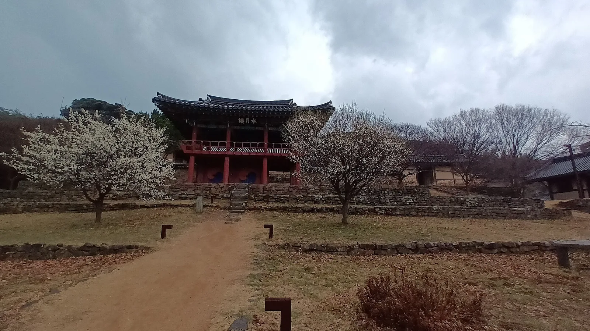
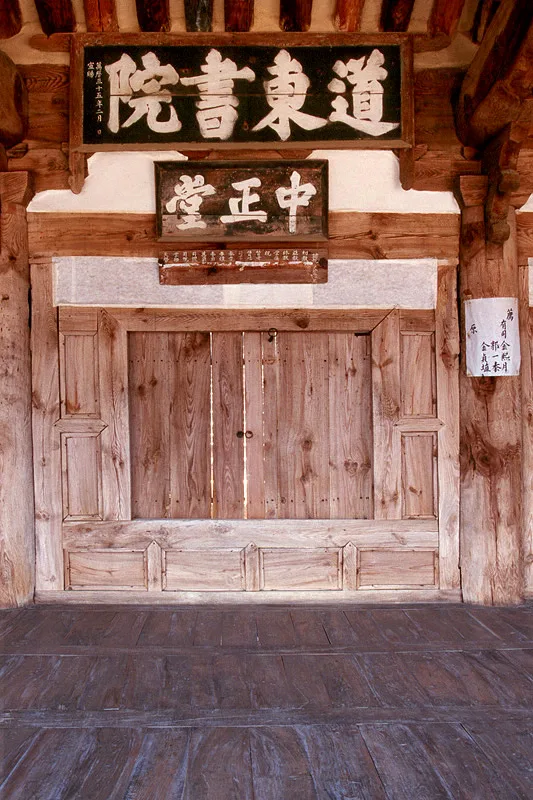
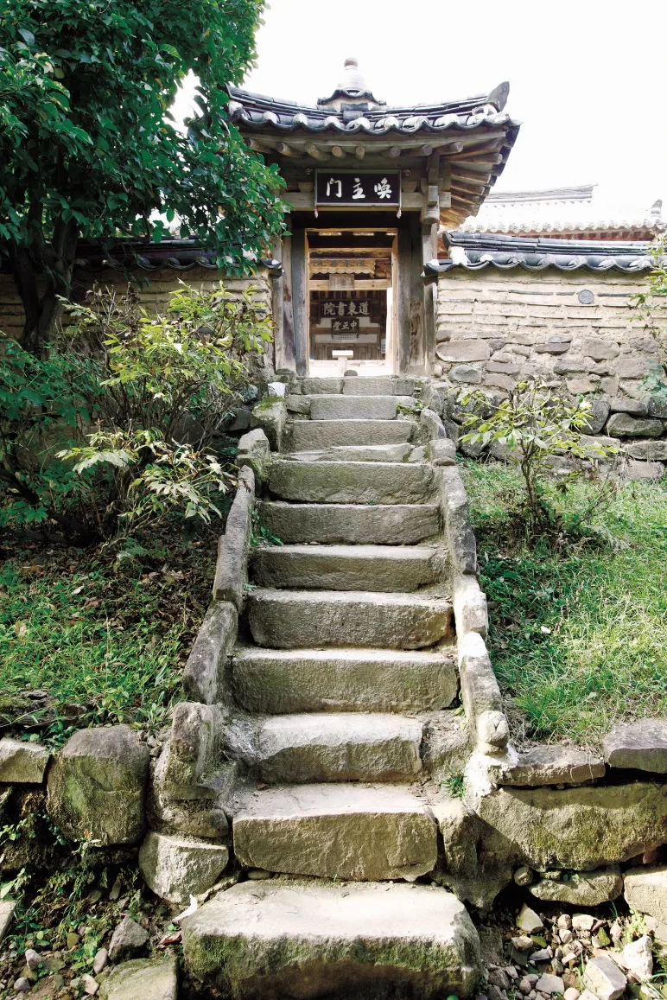
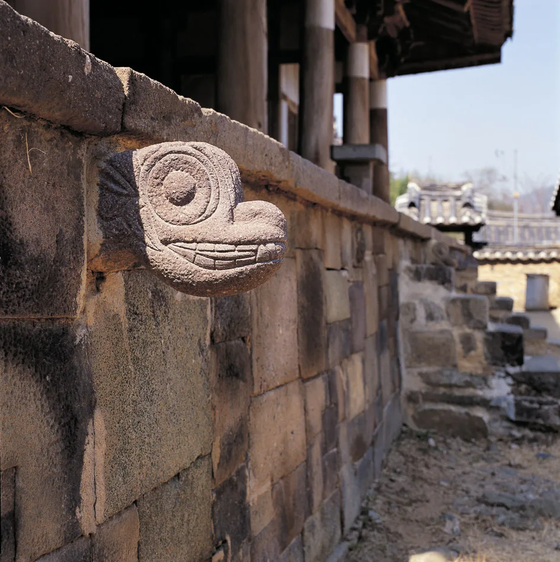
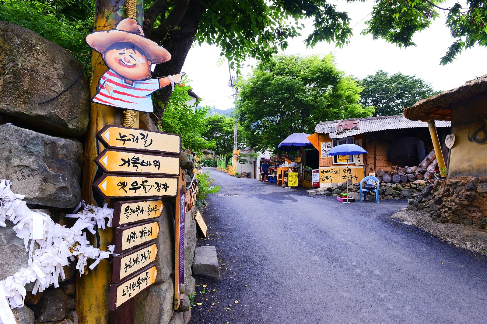
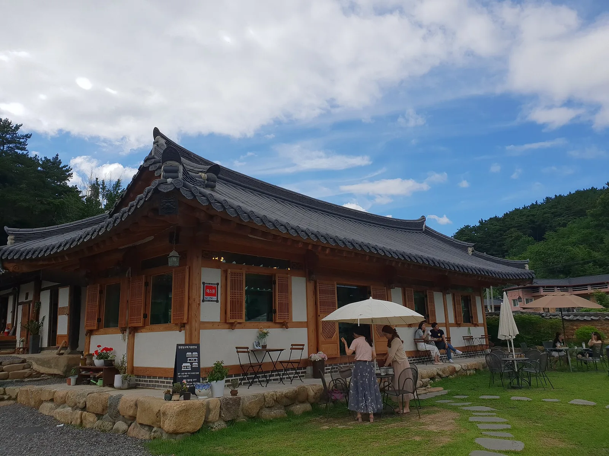

▲ 도동서원 입구의 누각 수월루. 3월에 촬영한 모습으로, 앞마당 나무에 흰 봄꽃이 피어 있다 사진=Wikimedia Commons (Dittwjfsdgkvkdjg, CC BY-SA 3.0)
1. 왜 도동서원인가 — 세계유산 서원 앞에 선 400년 은행나무
대구 달성군 구지면의 도동서원은 조선 성리학자 한훤당 김굉필(1454~1504)을 모신 서원으로, 2019년 '한국의 서원' 9곳 가운데 하나로 유네스코 세계유산에 올랐다. 국가유산청 자료에 따르면 서원은 1568년 비슬산 기슭에 쌍계서원이라는 이름으로 처음 세워졌고, 임진왜란 때 불탄 뒤 1604~1605년 김굉필의 묘소가 있는 지금 자리로 옮겨 다시 짓고 '보로동서원'이라 불렀다. 1607년 선조에게서 '도동서원(道東書院)'이라는 편액을 받았는데, '도가 동쪽으로 왔다', 곧 성리학의 도가 이 땅에 전해졌다는 뜻이다. 서원 전체는 2007년 사적으로 지정됐고(국가유산청은 서원 앞 신도비와 은행나무까지 사적 구역에 넣어 관리한다), 강당인 중정당과 사당, 그리고 이를 두른 담장은 1963년 보물로 지정됐다. 대한민국 구석구석은 담장이 보물로 지정된 것은 도동서원이 전국 처음이라고 소개한다.
김굉필은 문묘에 배향된 '동방오현' 가운데 첫손에 꼽히는 인물로, 1504년 갑자사화 때 유배지에서 사약을 받았다. 흥선대원군의 서원 철폐령 때도 헐리지 않고 남은 47개 서원 중 하나라는 점, 안동 병산서원·도산서원, 영주 소수서원, 경주 옥산서원과 함께 흔히 '5대 서원'으로 불린다는 점도 이 서원의 무게를 말해 준다. 같은 세계유산으로 묶인 병산서원을 다녀왔다면 안동 병산서원 만대루 관람 가이드와 비교하며 보는 재미가 있다. 두 곳 모두 낙동강을 앞에 둔 서원이다.
가을에 굳이 이곳을 찾는 이유는 서원 입구를 지키는 은행나무다. 김굉필의 외증손인 한강 정구가 심었다고 전해져 '김굉필나무'로도 불리는데, 대한민국 구석구석은 이 나무를 "어른 6명이 팔을 벌려야 안을 수 있을 정도"로 굵다고 소개하고, 세계일보(2021년)는 둘레 8.8m, 높이 25m로 전하며 무거운 가지를 기둥 5개가 받치고 있다고 적었다. 2019년 대구신문 보도에 따르면 수령은 약 440년으로, 대구시 보호수로 지정돼 있다. 서원 뒤로는 대니산, 앞으로는 낙동강이 흐르고, 서원으로 들어오는 길목의 고개 다람재에서는 이 모든 풍경이 한 화면에 들어온다.

▲ 도동서원 강당 중정당에 걸린 '道東書院'과 '中正堂' 편액. 아래는 마루와 닫힌 나무 판문이다 사진=Wikimedia Commons (문화재청, 공공누리 제1유형)
2. 가는 법과 주차 — 현풍IC에서 서원까지
자가용이라면 중부내륙고속도로 현풍IC로 나와 이방·구지 방면으로 향하는 것이 기본 경로다. 대한민국 구석구석이 안내하는 동선은 '현풍IC → 이방·구지 방면 → 다람재 → 도동서원'이다. 대구 도심에서 오면 현풍 방면으로 내려와 같은 길을 타게 된다. 서원 주소는 '구지면 도동서원로 1'로 검색하면 된다. 달성군 문화관광 누리집과 한국관광공사 영문 안내는 옛 주소인 '구지서로 726'으로 표기하고 있어, 내비게이션에서 둘 중 하나가 검색되지 않으면 다른 주소나 '도동서원'으로 찾으면 된다.
▲ 중부내륙고속도로 현풍분기점·나들목 안내 표지. 도동서원은 현풍IC에서 빠져 이방·구지 방면으로 간다(2015년 촬영) 사진=Wikimedia Commons (hyolee2, CC BY-SA 3.0)
| 항목 | 내용 | 비고 |
|---|---|---|
| 주소 | 대구 달성군 구지면 도동서원로 1 | 달성군·문화관광해설사 통합예약 안내 |
| 관람시간 | 10:00~17:00 | 휴무·요금은 안내소에 확인 |
| 고속도로 진출 | 중부내륙고속도로 현풍IC | 이방·구지 방면 |
| 서원 진입 | 다람재 고갯길 또는 도동서원 터널 | 터널 330m·왕복 2차로, 2019년 9월 임시 개통 |
| 주차 | 서원 인근 주차장 | 달성군 계획상 약 130면(일반 120·대형 10), 요금은 현장 확인 |
| 대중교통 보완 | 달성행복택시(수요응답형) | 구지면행정복지센터↔도동서원, 053-668-3012 |
| 문화관광해설 | 문화관광해설사 통합예약 사이트에서 예약 | 도동서원 항목 |
주차장은 서원 바로 옆, 은행나무가 선 입구 쪽에 있다. 달성군은 세계유산 등재 뒤 늘어나는 방문객을 위해 '구지면 도동리 14번지 일원' 4,600㎡에 일반 120대·대형 10대 등 약 130대 규모의 주차장을 조성하는 사업을 추진했다(2021년 12월~2022년 7월 사업 기간, 사업비 13억8,000만 원). 군 자료의 위치도를 보면 서원과 도로 하나를 사이에 둔 맞은편이다. 다만 주차 요금이나 운영 시간은 공식 안내를 찾지 못했으니 현장에서 확인하자. 은행나무가 절정인 11월 주말에는 관광버스까지 몰리므로, 오전 10시 개방 시각에 맞춰 도착하는 편이 주차와 사진 모두에 유리하다.
차가 없다면 선택지가 좁다. 달성군은 구지면행정복지센터와 도동서원을 잇는 수요응답형 '달성행복택시'를 안내하고 있으니(교통과 053-668-3012), 버스 시간표와 함께 미리 확인해 두는 것이 좋다.
3. 다람재 고갯길이냐, 도동터널이냐 — 운전 주의점
현풍 쪽에서 도동서원으로 넘어가려면 다람재라는 고개를 지나야 한다. 디지털달성문화대전에 따르면 다람재는 현풍읍 자모리와 구지면 도동리를 잇는 고개로, 산 모양이 다람쥐를 닮아 이런 이름이 붙었다. 1986년 지금의 고갯길이 닦이기 전에는 낙동강 절벽 가까이 난 오솔길로 다녔다는 기념비가 정상에 서 있다.
지금은 다람재 산자락을 뚫은 도동서원 터널(흔히 도동터널)이 있어 고개를 넘지 않고도 서원 앞으로 곧장 들어갈 수 있다. 영남일보 보도에 따르면 달성군은 서원의 세계유산 등재 직후인 2019년 9월 10일 현풍읍 자모리와 구지면 도동리를 잇는 이 터널(길이 330m)을 임시 개통했다. 폭 9m의 왕복 2차로에 폭 3.5m의 자전거도로 겸용 보도가 붙어 있고, 고개를 넘으면 10분 걸리던 길이 2분대로 줄었다. 2023년 서울신문 칼럼은 현풍에서 서원 가는 길이 '탄탄대로'가 됐고 "새로 뚫린 터널 끝에 서원이 싱겁게 나타난다"고 썼다. 서원이 목적이라면 터널이, 다람재 전망이 목적이라면 옛 고갯길이 답이다.
▲ 가드레일과 갈매기 표지가 이어진 산간 굽잇길을 내려가는 승용차. 고갯길에서는 커브마다 속도를 충분히 줄이는 것이 기본이다 이미지=AI 생성
🚗 다람재 고갯길 운전 팁
· 다람재 길은 1980년대에 산허리를 따라 낸 굽잇길이다. 터널이 생긴 뒤 통행량은 줄었지만, 커브가 이어지는 구간에서는 마주 오는 차와 자전거를 염두에 두고 저단 기어로 천천히 오르내리자.
· 정상 정자 쉼터의 주차 여건은 공식 안내가 없다. 도로변 커브 구간에 차를 세우고 사진을 찍는 것은 뒤차에 위험하니 피하자.
· 가을 오후에는 산그늘이 일찍 져 노면이 어둡고, 낙엽이 쌓인 구간은 미끄럽다. 해 지기 전에 넘는 일정을 권한다.
· 초행이라면 갈 때는 다람재(전망), 올 때는 도동터널처럼 나눠 쓰면 고갯길을 한 번만 달리면 된다.
4. 다람재 정자에서 내려다보는 낙동강 물굽이
다람재 정상에는 팔각정과 다람재 표지석, 그리고 김굉필의 시를 새긴 시비가 있는 작은 쉼터가 있다. 시비에 새겨진 것은 김굉필이 길가의 늙은 소나무를 두고 읊은 칠언절구 '노방송(路傍松)'이다. 정자에 서면 발아래로 도동서원 건물들이 옹기종기 모여 있고, 그 앞으로 낙동강이 크게 휘돌아 흐른다. 서울신문 칼럼의 필자는 이 전망대에서 "낙동강을 아무 생각 없이 오래도록 바라봤다"고 적었다.
서원 쪽에서 올려다보는 것과 고개 위에서 내려다보는 것은 완전히 다른 그림이다. 서원이 왜 이 자리에 들어섰는지, 곧 뒤로는 대니산에 기대고 앞으로는 강을 내려다보는 배치가 고개 위에서 한눈에 이해된다. 도동서원에서 강을 따라 상류(북쪽)로 올라가면 4대강 사업으로 세워진 달성보가 있어, 드라이브 삼아 낙동강을 따라 달려 보는 것도 방법이다.
▲ 낙동강을 가로지르는 달성보를 위에서 내려다본 모습(2025년 4월 촬영) 사진=Wikimedia Commons (Sanggok0225, CC BY-SA 4.0)
5. 서원 둘러보는 동선 — 수월루에서 사당까지
도동서원은 앞쪽에 공부하는 공간, 뒤쪽에 제사 공간을 두는 '전학후묘(前學後廟)' 배치의 전형이다. 입구에서 사당까지 건물이 한 축 위에 차례로 놓여 있어, 계단을 하나씩 오르며 보면 된다. 대한민국 구석구석과 한국민족문화대백과사전이 꼽는 관람 포인트를 동선 순서대로 정리했다.
| 순서 | 장소 | 놓치지 말 것 |
|---|---|---|
| ① | 은행나무(김굉필나무) | 서원 입구·주차장 쪽. 굵은 줄기와 사방으로 늘어진 가지 |
| ② | 수월루 | 입구의 2층 누각. 여름~초가을엔 배롱나무꽃이 핀다 |
| ③ | 환주문 | 높이가 낮아 어른은 고개를 숙여야 지나는 문 |
| ④ | 중정당(보물) | 제각각인 돌을 짜 맞춘 기단, 기단에 끼운 용머리 조각, 계단 옆 다람쥐 조각 |
| ⑤ | 동재·서재 | 중정당 앞 좌우의 유생 기숙 공간 |
| ⑥ | 담장(보물) | 흙과 기와를 켜켜이 쌓고 수막새를 박아 넣은 무늬 |
| ⑦ | 사당(보물) | 계단의 태극 문양 등 장식. 개방 여부는 현장 확인 |
환주문은 꼭 한 번 고개를 숙여 지나가 보자. 대한민국 구석구석은 이 문의 높이가 1.5m에 불과해 "어른이라면 누구나 고개를 숙여야" 지날 수 있다고 소개하며, 자신을 낮추는 선비의 마음가짐을 담은 것으로 풀이한다. 수월루에서 환주문까지는 폭이 좁은 돌계단이니, 은행잎이 깔리는 늦가을이나 비 온 뒤에는 발밑을 조심하자. 문을 지나면 강당 중정당이 정면으로 들어온다.

▲ 수월루 뒤에서 환주문으로 오르는 돌계단. 문 안쪽으로 강당 중정당의 편액이 보인다 사진=국가유산청(공공누리 제1유형)
중정당에서는 건물보다 발밑 기단을 먼저 보는 것이 이 서원을 제대로 보는 방법이다. 크기와 색깔, 모양이 제각각인 돌을 조각보처럼 맞춰 쌓았는데, 제자들이 스승을 기리며 저마다 돌을 가져와 쌓았다는 이야기가 전한다. 기단 곳곳에는 돌로 깎은 용머리가 튀어나와 있고, 계단 난간에는 꽃봉오리, 계단 옆에는 오르내리는 다람쥐가 새겨져 있다. 한국민족문화대백과사전도 기단의 용머리 등 장식 조각을 이 서원 건축의 특징으로 꼽는다.

▲ 중정당 기단에 박아 넣은 돌 용머리. 기단은 모양과 크기가 다른 돌을 맞물려 쌓았다 사진=국가유산청(공공누리 제1유형)
중정당 뒤 사당을 두른 담장은 흙과 암키와를 엇갈려 쌓고 사이사이 수막새를 박아 넣었다. 계단을 오르며 뒤를 돌아보면 수월루 지붕 너머로 낙동강이 보이는데, 이 시선이 곧 서원이 강을 향해 앉은 이유다. 해설을 듣고 싶다면 문화관광해설사 통합예약 사이트에서 도동서원 해설을 미리 예약할 수 있다.
6. 은행나무는 언제 물드나 — 계절 팁
도동서원 은행나무는 공식 개화·단풍 예보가 따로 나오지 않는다. 대신 해마다 현장을 다룬 보도를 보면 흐름이 읽힌다. 2019년 11월 12일 오마이뉴스 기사는 "아직 단풍이 다 물들지는 않았다"고 전했고, 2025년 11월 24일 보도는 "이번 주 아니면 못 본다"며 절정을 알렸다. 두 보도를 겹쳐 보면 11월 중순부터 물이 오르기 시작해 11월 하순 무렵 절정을 맞고, 이후 잎이 떨어져 마당에 깔리는 흐름이다. 해마다 날씨에 따라 달라지니 이는 과거 보도에서 읽은 경향일 뿐 예보가 아니다. 기온에 따라 1주일 안팎 앞뒤로 움직이니, 출발 전 최근 방문 사진을 확인하자.
▲ 늦가을 오래된 은행나무 아래 흙마당과 돌담 옆길을 덮은 노란 은행잎 이미지=AI 생성
| 시기 | 볼거리 | 운전·방문 팁 |
|---|---|---|
| 9~10월 | 수월루 배롱나무꽃(초가을까지), 푸른 은행나무 | 한적한 편, 다람재 전망 여유롭게 |
| 11월 중순~하순 | 은행나무 절정(예년 보도 기준) | 주말 오전 일찍 도착, 주차 혼잡 대비 |
| 11월 하순 이후 | 마당에 깔린 은행잎 | 고갯길 낙엽 구간 미끄럼 주의 |
| 겨울~3월 | 잎 떨군 가지, 봄꽃 핀 수월루 앞마당 | 그늘진 커브의 결빙 주의 |
은행나무를 여러 곳 비교해 보고 싶다면 수령 1,100년으로 추정되는 양평 용문사 은행나무 가이드도 참고하자. 한 가지 더, 은행나무 아래에 차를 대면 떨어진 열매가 도장면에 얼룩을 남길 수 있다. 주차는 나무에서 조금 떨어진 자리를 고르는 편이 낫다. 나무는 보호수이자 사적 지정 구역 안에 있고 굵은 가지를 여러 개의 기둥이 받치고 있으니, 사진을 찍을 때 지지대에 기대거나 가지를 당기지 말자.
7. 주변 연계 코스 — 사문진 주막촌, 마비정 벽화마을
도동서원에서 대구 도심 방향으로 돌아가는 길에 들르기 좋은 곳이 화원읍의 사문진 나루터와 주막촌이다. 사문진은 조선 시대 낙동강 하류의 대표 나루로, 1900년 미국인 선교사 사이드보텀이 우리나라 첫 피아노를 들여온 곳으로 알려져 있다. 당시 사람들은 이 악기를 '귀신통'이라 불렀다. 달성군은 2013년 옛 나루터 자리에 초가 주막을 복원해 주막촌을 열었고, 2014년부터는 유람선도 띄웠다. 주막에서는 국밥과 전, 막걸리를 판다. 운영 시간은 계절에 따라 달라지므로 방문 전 확인하자.
일정이 맞는다면 10월 3일(토) 사문진 야외공연장에서 열리는 '2026 달성 100대 피아노' 공연도 눈여겨볼 만하다. 보도에 따르면 오후 1시부터 부대 프로그램이, 오후 7시에 본 공연이 열린다. 첫 피아노가 들어온 나루라는 이야기를 음악 축제로 풀어낸 행사다. 행사일에는 주변 도로와 주차장이 붐빌 수 있다.
마비정 벽화마을은 화원읍 본리2리 산간 마을로, 2012년 농촌 체험 마을 사업으로 담장에 1960~1970년대 농촌 풍경을 그려 넣었다. 연리목과 국내 최고령으로 알려진 옻나무, 대나무·이팝나무 터널 길이 있고, 2015년 대한민국 경관대상 최우수상을 받았다. 마을 이름은 천리마와 백마에 얽힌 전설 속 정자 '마비정(馬飛亭)'에서 왔다. 마을 입구에 주차장과 화장실이 있다.

▲ 마비정 벽화마을 골목 입구. 나무 이정표와 캐릭터 판이 마을 길을 안내한다(2016년 6월 촬영) 사진=Wikimedia Commons (Daegu City Official, CC BY-SA 4.0)
김굉필의 자취를 더 따라가고 싶다면 대한민국 구석구석이 도동서원에서 차로 20분 거리로 소개하는 한훤당고택도 있다. 한옥 카페와 한옥 숙박을 운영한다.

▲ 달성군 한훤당고택의 한옥 카페 건물과 앞마당(2018년 7월 촬영) 사진=Wikimedia Commons (Choi2451, CC BY-SA 3.0)
| 시간대 | 코스 | 메모 |
|---|---|---|
| 오전 | 현풍IC → 다람재 정자 전망 | 고갯길 천천히, 도로변 정차 금지 |
| 10시 전후 | 도동서원 관람(은행나무·중정당 기단) | 개방 시각 맞춰 주차 |
| 점심 | 사문진 주막촌 국밥 | 나갈 때는 도동터널 이용 |
| 오후 | 마비정 벽화마을 또는 한훤당고택 | 해 지기 전 귀가 동선 |
8. 방문 전 체크리스트
도동서원은 규모가 큰 관광지가 아니라 한 시간 남짓이면 둘러볼 수 있지만, 은행나무 시즌에는 한꺼번에 사람이 몰린다. 떠나기 전에 아래 항목을 확인하자.
✅ 출발 전 확인할 것
· 관람시간(10:00~17:00)과 휴무·관람료는 도동서원관광안내소(053-616-6407)에 최종 확인
· 은행나무 상태는 최근 1주일 내 방문 사진으로 확인(예년 보도 기준 11월 중순~하순 절정)
· 주말에는 오전 10시 전후 도착, 주차장 만차 시 무리한 갓길 주차 금지
· 다람재 고갯길은 굽잇길, 전망만 보고 나갈 땐 도동터널 이용
· 해설을 원하면 문화관광해설사 통합예약에서 사전 예약
· 사문진 주막촌 운영시간, 10월 3일 100대 피아노 행사일 교통 혼잡 확인